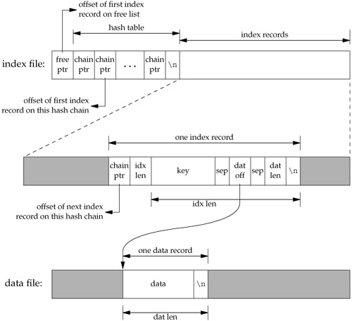

20.4. Implementation OverviewDatabase access libraries often use two files to store the information: an index file and a data file. The index file contains the actual index value (the key) and a pointer to the corresponding data record in the data file. Numerous techniques can be used to organize the index file so that it can be searched quickly and efficiently for any key: hashing and B+ trees are popular. We have chosen to use a fixed-size hash table with chaining for the index file. We mentioned in the description of db_open that we create two files: one with a suffix of .idx and one with a suffix of .dat. We store the key and the index as null-terminated character strings; they cannot contain arbitrary binary data. Some database systems store numerical data in a binary format (1, 2, or 4 bytes for an integer, for example) to save storage space. This complicates the functions and requires more work to make the database files portable between different systems. For example, if a network has two systems that use different formats for storing binary integers, we need to handle this if we want both systems to access the database. (It is not at all uncommon today to have systems with different architectures sharing files on a network.) Storing all the records, both keys and data, as character strings simplifies everything. It does require additional disk space, but that is a small cost for portability. With db_store, only one record for each key is allowed. Some database systems allow a key to have multiple records and then provide a way to access all the records associated with a given key. Additionally, we have only a single index file, meaning that each data record can have only a single key (we don't support secondary keys). Some database systems allow each record to have multiple keys and often use one index file per key. Each time a new record is inserted or deleted, all index files must be updated accordingly. (An example of a file with multiple indexes is an employee file. We could have one index whose key is the employee ID and another whose key is the employee's Social Security number. Having an index whose key is the employee name could be a problem, as names need not be unique.) Figure 20.2 shows a general picture of the database implementation. Figure 20.2. Arrangement of index file and data fileThe index file consists of three portions: the free-list pointer, the hash table, and the index records. In Figure 20.2, all the fields called ptr are simply file offsets stored as an ASCII number. To find a record in the database, given its key, db_fetch calculates the hash value of the key, which leads to one hash chain in the hash table. (The chain ptr field could be 0, indicating an empty chain.) We then follow this hash chain, which is a linked list of all the index records with this hash value. When we encounter a chain ptr value of 0, we've hit the end of the hash chain. Let's look at an actual database file. The program in Figure 20.3 creates a new database and writes three records to it. Since we store all the fields in the database as ASCII characters, we can look at the actual index file and data file using any of the standard UNIX System tools: $ ls -l db4.* -rw-r--r-- 1 sar 28 Oct 19 21:33 db4.dat -rw-r--r-- 1 sar 72 Oct 19 21:33 db4.idx $ cat db4.idx 0 53 35 0 0 10Alpha:0:6 0 10beta:6:14 17 11gamma:20:8 $ cat db4.dat data1 Data for beta record3 Figure 20.3. Create a database and write three records to it
#include "apue.h"
#include "apue_db.h"
#include <fcntl.h>
int
main(void)
{
DBHANDLE db;
if ((db = db_open("db4", O_RDWR | O_CREAT | O_TRUNC,
FILE_MODE)) == NULL)
err_sys("db_open error");
if (db_store(db, "Alpha", "data1", DB_INSERT) != 0)
err_quit("db_store error for alpha");
if (db_store(db, "beta", "Data for beta", DB_INSERT) != 0)
err_quit("db_store error for beta");
if (db_store(db, "gamma", "record3", DB_INSERT) != 0)
err_quit("db_store error for gamma");
db_close(db);
exit(0);
}
To keep this example small, we have set the size of each ptr field to four ASCII characters; the number of hash chains is three. Since each ptr is a file offset, a four-character field limits the total size of the index file and data file to 10,000 bytes. When we do some performance measurements of the database system in Section 20.9, we set the size of each ptr field to six characters (allowing file sizes up to 1 million bytes), and the number of hash chains to more than 100. The first line in the index file
0 53 35 0
is the free-list pointer (0, the free list is empty) and the three hash chain pointers: 53, 35, and 0. The next line 0 10Alpha:0:6 shows the format of each index record. The first field (0) is the four-character chain pointer. This record is the end of its hash chain. The next field (10) is the four-character idx len, the length of the remainder of this index record. We read each index record using two reads: one to read the two fixed-size fields (the chain ptr and idx len) and another to read the remaining (variable-length) portion. The remaining three fieldskey, dat off, and dat lenare delimited by a separator character (a colon in this case). We need the separator character, since each of these three fields is variable length. The separator character can't appear in the key. Finally, a newline terminates the index record. The newline isn't required, since idx len contains the length of the record. We store the newline to separate each index record so we can use the normal UNIX System tools, such as cat and more, with the index file. The key is the value that we specified when we wrote the record to the database. The data offset (0) and data length (6) refer to the data file. We can see that the data record does start at offset 0 in the data file and has a length of 6 bytes. (As with the index file, we automatically append a newline to each data record, so we can use the normal UNIX System tools with the file. This newline at the end is not returned to the caller by db_fetch.) If we follow the three hash chains in this example, we see that the first record on the first hash chain is at offset 53 (gamma). The next record on this chain is at offset 17 (alpha), and this is the last record on the chain. The first record on the second hash chain is at offset 35 (beta), and it's the last record on the chain. The third hash chain is empty. Note that the order of the keys in the index file and the order of their corresponding records in the data file is the same as the order of the calls to db_store in Figure 20.3. Since the O_TRUNC flag was specified for db_open, the index file and the data file were both truncated and the database initialized from scratch. In this case, db_store just appends the new index records and data records to the end of the corresponding file. We'll see later that db_store can also reuse portions of these two files that correspond to deleted records. The choice of a fixed-size hash table for the index is a compromise. It allows fast access as long as each hash chain isn't too long. We want to be able to search for any key quickly, but we don't want to complicate the data structures by using either a B-tree or dynamic hashing. Dynamic hashing has the advantage that any data record can be located with only two disk accesses (see Litwin [1980] or Fagin et al. [1979] for details). B-trees have the advantage of traversing the database in (sorted) key order (something that we can't do with the db_nextrec function using a hash table.) |